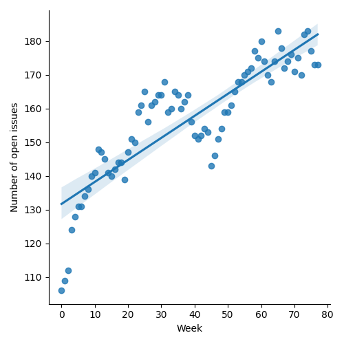
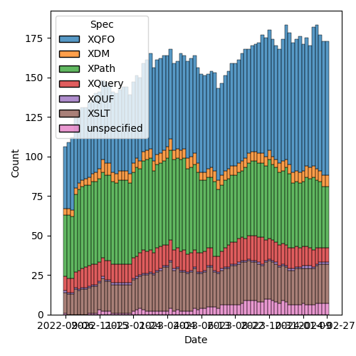
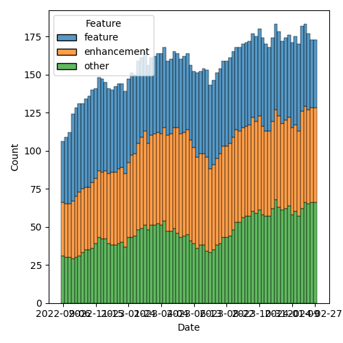

QT4 CG Meeting 067 Minutes 2024-02-27
Table of Contents
- Minutes
- Summary of new and continuing actions
[0/11] - 1. Administrivia
- 2. Technical Agenda
- 2.1. PR #1003: 919 Use EBV in boolean callbacks
- 2.2. PR #1042: 1016 Editorial cleanup - csv-to-arrays
- 2.3. PR #1041: 236 map:build: sequence of keys
- 2.4. PR #1040: 485 Predeclared namespaces in XQuery: output
- 2.5. PR #988: 960 Pinned and labeled values
- 2.6. PR #832: 77 Add map:deep-update and array:deep-update
- 3. Any other business
- 4. Adjourned
Meeting index / QT4CG.org / Dashboard / GH Issues / GH Pull Requests
Minutes
Approved at meeting 068 on 5 March 2024.
Summary of new and continuing actions [0/11]
[ ]QT4CG-052-02: NW to consider how to schedule an “editor’s meeting”[ ]QT4CG-056-04: MK to write a proposal for adding a select attribute to xsl:text[ ]QT4CG-058-02: MK to consider providing more advice about the pitfalls of mixing decimal and double when sorting[ ]QT4CG-063-01: MK to revise #956 especially with respect to the options parameter[ ]QT4CG-063-02: JK to consider whether the roman numeral example is appropriate for the spec.[ ]QT4CG-063-04: NW to try to add test review to the editorial meeting.[ ]QT4CG-063-05: MK to revise PR #953 to take account of CG’s comments[ ]QT4CG-063-06: MK to consider refactoring the declare item type syntax to something like declare record[ ]QT4CG-064-08: NW to open an issue to try to resolve $search to $target consistently.[ ]QT4CG-066-01: MK to add a note that the grammar rules for regular expressions apply after comments are removed[ ]QT4CG-067-01: NW to ask the XML Prague organizers for hosting[ ]QT4CG-067-02: MK to revert the changes to the test suite for EBV (PR 1003)
1. Administrivia
1.1. Roll call [9/13]
Regrets SF, DN.
[X]Reece Dunn (RD)[ ]Sasha Firsov (SF)[X]Christian Grün (CG)[X]Joel Kalvesmaki (JK) [:30-][X]Michael Kay (MK)[ ]Juri Leino (JLO)[X]John Lumley (JLY)[ ]Dimitre Novatchev (DN)[X]Wendell Piez (WP)[X]Ed Porter (EP)[ ]Adam Retter (AR) [:10-][X]C. M. Sperberg-McQueen (MSM)[X]Norm Tovey-Walsh (NW). Scribe. Chair.
1.2. Accept the agenda
Proposal: Accept the agenda.
Accepted.
1.2.1. Status so far…

Figure 1: “Burn down” chart on open issues

Figure 2: Open issues by specification

Figure 3: Open issues by type
1.3. Approve minutes of the previous meeting
Proposal: Accept the minutes of the previous meeting.
Accepted.
1.4. Next meeting
The next meeting is scheduled for Tuesday, 5 March 2024.
Any regrets for the next meeting?
Propose: meet 4-5 June in Prague.
No objections raised.
ACTION: NW to ask the XML Prague organizers for hosting
1.5. Review of open action items [1/11]
[ ]QT4CG-052-02: NW to consider how to schedule an “editor’s meeting”[ ]QT4CG-056-04: MK to write a proposal for adding a select attribute to xsl:text[ ]QT4CG-058-02: MK to consider providing more advice about the pitfalls of mixing decimal and double when sorting[ ]QT4CG-063-01: MK to revise #956 especially with respect to the options parameter[ ]QT4CG-063-02: JK to consider whether the roman numeral example is appropriate for the spec.[ ]QT4CG-063-04: NW to try to add test review to the editorial meeting.[ ]QT4CG-063-05: MK to revise PR #953 to take account of CG’s comments[ ]QT4CG-063-06: MK to consider refactoring the declare item type syntax to something like declare record[ ]QT4CG-064-08: NW to open an issue to try to resolve $search to $target consistently.[X]QT4CG-065-01: CG to amend PR #795 to address MK’s comment re: implementation defined behavior[ ]QT4CG-066-01: MK to add a note that the grammar rules for regular expressions apply after comments are removed
1.6. Review of open pull requests and issues
d*** Blocked
The following PRs are open but have merge conflicts or comments which suggest they aren’t ready for action.
1.6.1. Merge without discussion
The following PRs are editorial, small, or otherwise appeared to be uncontroversial when the agenda was prepared. The chairs propose that these can be merged without discussion. If you think discussion is necessary, please say so.
- PR #1034: QT4CG-066-xx Add note regarding absence of drop-while / skip-while
- PR #1033: QT4CG-066-01 Add note that whitespace and comments in regexen are lexical constructs
- PR #1032: 1029 Make argument of fn:void optional
- PR #1031: 1024 Change precedence of 'otherwise' operator
Proposed: merge without discussion
Accepted.
1.6.2. Close without action
It has been proposed that the following issues be closed without action. If you think discussion is necessary, please say so.
- Issue #1030: allow pattern matches in axis expression
- Issue #1007: How to invert a predicate function
- Issue #990: Transitive closure on non-nodes
- Issue #872: Symmetry: fn:items-at → fn:get
- Issue #843: Standard, array & map functions: Equivalencies
- Issue #825: array:members-at
- Issue #356: array:leaves
Proposed: close without action
Accepted.
2. Technical Agenda
2.1. PR #1003: 919 Use EBV in boolean callbacks
See PR #1003
- MK: The proposal introduces a backwards incompatibility. If the callback
function returns a node (currently) we atomize the node and look at it’s
boolean value (if it has one). If we use EBV, the value becomes true if the
node exists and false if it doesn’t.
- … That doesn’t effect very many functions because many of them are new, but it does effect a few established functions.
- MK: We could do it anyway, do it differently for old versus new, or revert the change.
- NW: I would object to doing old functions differently than one news.
- JLY: How easy is it to put an exists around the callback itself?
- MK: You can always convert existing calls, but if you run a query and it gives different results, they have to go on a bug hunt.
Sentiment appears to be reverting the change.
- RD: What are we reverting?
- MK: The proposal to change callback functions that return a boolean to take the EBV instead of requiring a boolean.
- WP: Bravo for finding the problem in tests.
- RD: I think reverting it would be sensible given that it hasn’t been accepted. While it’s nice, introducing backwards incompatibilities is a risk.
Proposed: revert the change, abandon PR 1003
Accepted.
ACTION: MK to revert the changes to the test suite for EBV (PR 1003)
2.2. PR #1042: 1016 Editorial cleanup - csv-to-arrays
See PR #1042
- MK: This changes the name of one function,
csv-to-arraysappears in the current spec ascsv-to-simple-records. I think this name is simpler and clearer.- … It’s the function that turns a raw CSV into a sequence of rows.
- … The rest of the PR is editorial, but it’s a substantial rewrite in a few places; it’s intended to be equivalent.
- MSM asks about the substantial rewrite
- MK: The csv-to-xml function is now defined in terms of parse-csv to reduce duplication. It’s now a three-level layering. I’ve thought of trying to redefine parse-csv on top of csv-to-array; potentially doable, but maybe complicated.
- MK: There’s still scope to do a bit more, I opened issues for a couple of things.
Proposal: accept this PR.
Accepted.
2.3. PR #1041: 236 map:build: sequence of keys
See PR #1041
- CG reviews the PR.
- CG: Generalized the
map:buildfunction to take a sequence of keys rather than a single key. The implementation is now nested. There’s an example that shows how it works. - JLY: Sounds good to me.
- MSM: Are there four titles, or three titles one that appears in two lists?
- MK: There are three titles.
- MSM: Is that moderately clear from the exposition?
- NW: If it copied, it would need a warning with flashing red lights!
Proposal: accept this PR.
Accepted.
- JLY: Is there any point in returning an empty list if there’s no key?
- RD: The function already has a zero or one argument.
2.4. PR #1040: 485 Predeclared namespaces in XQuery: output
See PR #1040
- CG: We already added some predeclared namespaces to XQuery: array, map, and math.
- … JK suggested we add the namespace used for output parameters
- … I removed some redundancy.
- MSM: Is there a logic to the order in the list?
- CG: Sorted by URI.
Proposal: accept this PR.
Accepted.
2.5. PR #988: 960 Pinned and labeled values
See PR #988
- MK: I’ve done more work on it; my confidence is increased.
- … I’ve done some implementation and I think the proposal is sound.
- MK: First, there’s a data model change: in 2.9.5 Map Items.
- … While you’re doing a deep update (PR in the works), you use a transient
identifier with
fn:pin - … It says the same for arrays.
- … Then it talks about labeled items, 2.10. It can be applied to any item.
- … At the moment, there’s no way to make a subject or a label that is itself labeled, but there’s nothing in the data model to forbid it.
- … Operations that construct new items don’t label them unless asked to.
- … Labeled items are used in lookup operations, etc. but not described in the data model.
- … While you’re doing a deep update (PR in the works), you use a transient
identifier with
- MK: The next part is in XPath:
- … In 4.15.4 we discuss pinned maps and arrays in the context of navigation in JSON.
- … Ancestors goes upward and path goes downward, will that be more or less confusing?
- RD: That’s consistent with XPath selectors
- … In terms of intuitiveness, it’s better that these be the same
- MK: The formal model for
fn:pinis described in terms of a deep copy, but you wouldn’t actually do it this way! - MK: The example shows how to find the co-authors in the ancestors of a map value.
- MK: There’s a note that using empty sequences as JSON
nullvalues. - NW observes that we accepted the PR for alternative representations of JSON null last week.
- MK: Finally, in F&O we have new functions:
fn:pindescribes the formal detail of how labels are added. - MK: Then there’s
fn:labelthat just extracts the labels. - MK: In writing examples, I was tempted to add some conveniences. Then I decided to just get the primitives in place first.
- MSM: In my variant of English, the term “label” pretty definitely suggests a simple flat value like a string; having label be a structured annotation instead bothers me.
- MK: I thought that, then I looked at the label on my shirt and it has lots of properties on it!
- RD: Maybe
fn:labelsto indicate that it’s multi-valued? - MSM: Is the following paraphrase accurate: the rational offered for introducing maps when they were introduced against the question “we already have structed data”. The primary answer was that they were lighter weight, faster, only downward pointers. This is an add-on for maps so that they can be as heavy weight as elements.
- MK: It still doesn’t add the full weight because you can still update a map
without making a complete copy. You can still do updates in constant time
rather than in time proportional to the size of the map.
- … This translates into a “zipper” function in functional terms. All of the items that haven’t been touched are reused.
- … Trying to do that for node trees is very hard because node identity is so deeply embedded.
- WP: I like the direction; but I’m concerned about the implementation details.
- JK: Will there be a “pin” attribute in
xsl:mapso that we can do it at the outset? - MK: No, you just use the map constructor and pipe it into the
fn:pinfunction.- … I think there are use-cases for automatic pinning; for example, should apply-templates automatically pin a map as it’s going.
- … One of the things on the follow-up list from this proposal is that it becomes possible to match things within a JSON tree according to their ancestry.
- NW: Is this ready to be mergee?
Proposal: accept this PR.
Accepted.
2.6. PR #832: 77 Add map:deep-update and array:deep-update
See PR #832
Not yet ready for more discussion.
3. Any other business
JLY has something to discuss about iXML and grammars.
- JLY: I’m doing a lot of work with iXML (with NW and MSM and Steven Pemberton).
- … I’ve been thinking about how you can generate and modify iXML grammars.
- … I’ve now got it working with the XPath 4.0 grammar.
JLY does a jωiXML demo showing an iXML grammar for XPath generated from the XPath 4.0 grammar.
This has revealed an ambiguity in the grammar, AtomicOrUnionType and
TypedRecordType
RD has worked on modified grammars that integrate MarkLogic/BaseX/Saxon grammars.